Subclusters Fibroblasts
Sophie.Alice
2026-07-08
Last updated: 2026-07-15
Checks: 7 0
Knit directory: MT_Project/
This reproducible R Markdown analysis was created with workflowr (version 1.7.2). The Checks tab describes the reproducibility checks that were applied when the results were created. The Past versions tab lists the development history.
Great! Since the R Markdown file has been committed to the Git repository, you know the exact version of the code that produced these results.
Great job! The global environment was empty. Objects defined in the global environment can affect the analysis in your R Markdown file in unknown ways. For reproduciblity it’s best to always run the code in an empty environment.
The command set.seed(20260612) was run prior to running
the code in the R Markdown file. Setting a seed ensures that any results
that rely on randomness, e.g. subsampling or permutations, are
reproducible.
Great job! Recording the operating system, R version, and package versions is critical for reproducibility.
Nice! There were no cached chunks for this analysis, so you can be confident that you successfully produced the results during this run.
Great job! Using relative paths to the files within your workflowr project makes it easier to run your code on other machines.
Great! You are using Git for version control. Tracking code development and connecting the code version to the results is critical for reproducibility.
The results in this page were generated with repository version 9932802. See the Past versions tab to see a history of the changes made to the R Markdown and HTML files.
Note that you need to be careful to ensure that all relevant files for
the analysis have been committed to Git prior to generating the results
(you can use wflow_publish or
wflow_git_commit). workflowr only checks the R Markdown
file, but you know if there are other scripts or data files that it
depends on. Below is the status of the Git repository when the results
were generated:
Ignored files:
Ignored: .DS_Store
Ignored: .Rhistory
Ignored: .Rproj.user/
Ignored: analysis/.DS_Store
Unstaged changes:
Deleted: analysis/Baseline_Mac_Response.Rmd
Deleted: analysis/Baseline_Mac_Response_Lenient.Rmd
Deleted: analysis/Baseline_TGF_Response.Rmd
Deleted: analysis/Baseline_TGF_Response_Lenient.Rmd
Deleted: analysis/Modulated_TGF_Response.Rmd
Deleted: analysis/Modulated_TGF_Response_Lenient.Rmd
Deleted: analysis/Stim_Mac_Response.Rmd
Deleted: analysis/Stim_Mac_Response_Lenient.Rmd
Note that any generated files, e.g. HTML, png, CSS, etc., are not included in this status report because it is ok for generated content to have uncommitted changes.
These are the previous versions of the repository in which changes were
made to the R Markdown (analysis/Subclusters_Fib.Rmd) and
HTML (docs/Subclusters_Fib.html) files. If you’ve
configured a remote Git repository (see ?wflow_git_remote),
click on the hyperlinks in the table below to view the files as they
were in that past version.
| File | Version | Author | Date | Message |
|---|---|---|---|---|
| Rmd | 9932802 | Sophie.Alice | 2026-07-15 | subclusters exp |
| html | a41e2a7 | Sophie.Alice | 2026-07-15 | Build site. |
| Rmd | aaec6d0 | Sophie.Alice | 2026-07-15 | CM DGEA |
| html | fc83bf1 | Sophie.Alice | 2026-07-10 | Build site. |
| Rmd | 32a9723 | Sophie.Alice | 2026-07-10 | Update viewing of tables |
1 Setup
rm(list=ls())
gc() used (Mb) gc trigger (Mb) limit (Mb) max used (Mb)
Ncells 907875 48.5 1753068 93.7 NA 1321070 70.6
Vcells 1599340 12.3 8388608 64.0 16384 2438782 18.7library(readr)
library(dplyr)
library(ggplot2)
library(Seurat)
library(hdf5r)
library(scCustomize)
library(patchwork)
library(cowplot)
library(ggrepel)
library(workflowr)
library(scDblFinder)
library(clustree)
library(harmony)
library(speckle)
library(MAST)
library(tibble)
library(EnhancedVolcano)
library(ggarchery)
library(ggtangle)
library(clusterProfiler)
library(org.Hs.eg.db)
library(GO.db)
library(DOSE)
library(fgsea)
library(forcats)
library(SCpubr)
library(assertthat)
library(UCell)
library(DT)
library(ggforce)
library(enrichplot)
library(ggrain)2 Get the Data
path <- "/Users/sophiewagner/Desktop/USZ 25:26/Gabi_Project_Setup/Laila_MT_Project/Laila_MT_Project/RDS_Files/Post_Annotation.rds"
Data <- read_rds(path)
DataAn object of class Seurat
65557 features across 13386 samples within 2 assays
Active assay: RNA (38606 features, 0 variable features)
2 layers present: counts, data
1 other assay present: SCT
3 dimensional reductions calculated: pca, harmony, umapFibroblasts.raw <- subset(Data, cell_type == "Cardiac Fibroblasts")
Idents(Data) <- "orig.ident"
custom_palette <- colorRampPalette(c("#005EA8", "#6DB335", "#FFD966", "#EDAAD2", "#9F1C67"))
gradient_colors3 <- custom_palette(6)
gradient_colors4 <- custom_palette(4)3 Functions
##################################### Tables
create_table <- function(df) {
DT::datatable(
df,
extensions = 'Buttons',
options = list(
dom = 'Blfrtip',
buttons = c('copy', 'csv', 'excel', 'pdf'),
pageLength = 10,
lengthMenu = c(10, 25, 50, 100),
autoWidth = TRUE,
columnDefs = list(list(
targets = '_all',
className = 'dt-nowrap'
))
),
filter = 'top',
class = 'cell-border stripe hover nowrap'
)
}
###################################### Feature Plots
plot_features <- function(seurat_obj, features, title = NULL, subtitle = NULL, num_columns = 2) {
p <- FeaturePlot_scCustom(seurat_obj, features = features, num_columns = num_columns, pt.size = 0.1)
p <- p + patchwork::plot_annotation(
title = title,
subtitle = subtitle,
theme = ggplot2::theme(
plot.title.position = "plot",
plot.title = ggplot2::element_text(face = "bold", size = 12, hjust = 0),
plot.subtitle = ggplot2::element_text(face = "italic", size = 10, hjust = 0)
)
)
return(p)
}3.1 Inspecting Data
Data An object of class Seurat
65557 features across 13386 samples within 2 assays
Active assay: RNA (38606 features, 0 variable features)
2 layers present: counts, data
1 other assay present: SCT
3 dimensional reductions calculated: pca, harmony, umapDefaultAssay(Data)[1] "RNA"table(Data$orig.ident)
CMF_NC CMF_TGF CMFHM_NC CMFHM_TGF
2389 3388 4316 3293 table(Data$TGF_status)
NC TGF_B
6705 6681 table(Data$Macrophage_status)
No_Macrophages With_Macrophages
5777 7609 3.2 Isolating and Sub-clustering Cardiac Fibroblasts
PC = 20
set.seed(42)
Fibroblasts.list <- SplitObject(Fibroblasts.raw, split.by = "orig.ident")
# Re-run SCTransform on the fibroblast subsets to find fibroblast-specific variance
for (i in 1:length(Fibroblasts.list)) {
DefaultAssay(Fibroblasts.list[[i]]) <- "RNA"
Fibroblasts.list[[i]] <- SCTransform(Fibroblasts.list[[i]],
vst.flavor = "v2",
vars.to.regress = "percent.mt",
return.only.var.genes = TRUE,
method = "glmGamPoi",
verbose = FALSE)
}
fib_features <- SelectIntegrationFeatures(object.list = Fibroblasts.list, nfeatures = 3000)
Fibroblasts <- merge(x = Fibroblasts.list[[1]], y = Fibroblasts.list[2:length(Fibroblasts.list)], merge.data = TRUE)
VariableFeatures(Fibroblasts) <- fib_features
Fibroblasts <- RunPCA(Fibroblasts, npcs = 50, verbose = FALSE)
##################################### Elbowplot
ElbowPlot(Fibroblasts, ndims = 50)+
labs(
title = "Principal Component (PC) Variance Elbow Plot"
) +
geom_vline(xintercept = 20, linetype = "dashed", color = "darkred", size = 0.8)+
theme_minimal(base_size = 11)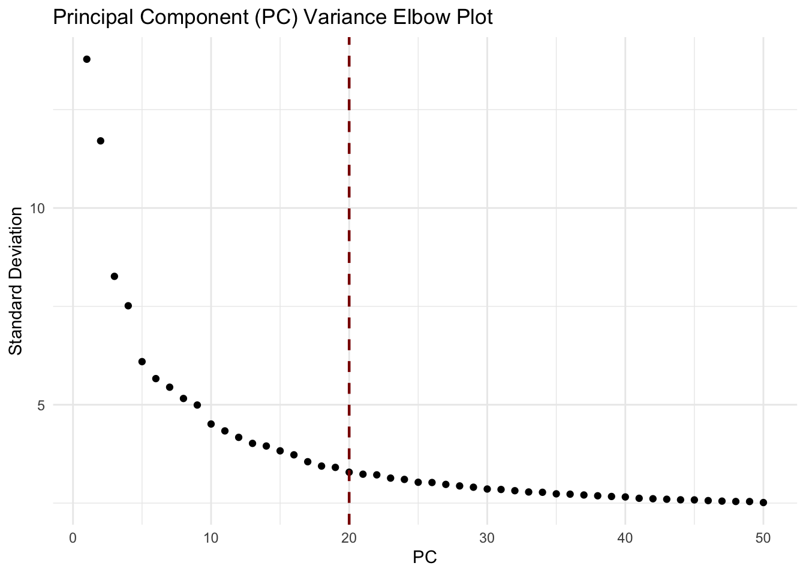
| Version | Author | Date |
|---|---|---|
| fc83bf1 | Sophie.Alice | 2026-07-10 |
##################################### Clustering without integrations
Dims <- 20
Fibroblasts <- RunUMAP(Fibroblasts, dims = 1:Dims)14:46:30 UMAP embedding parameters a = 0.9922 b = 1.11214:46:30 Read 1354 rows and found 20 numeric columns14:46:30 Using Annoy for neighbor search, n_neighbors = 3014:46:30 Building Annoy index with metric = cosine, n_trees = 500% 10 20 30 40 50 60 70 80 90 100%[----|----|----|----|----|----|----|----|----|----|**************************************************|
14:46:30 Writing NN index file to temp file /var/folders/4w/_9gjjltx7r7__536sy6dcwbw0000gn/T//RtmpRAWARL/file5764212763ab
14:46:30 Searching Annoy index using 1 thread, search_k = 3000
14:46:30 Annoy recall = 100%
14:46:30 Commencing smooth kNN distance calibration using 1 thread with target n_neighbors = 30
14:46:31 Initializing from normalized Laplacian + noise (using RSpectra)
14:46:31 Commencing optimization for 500 epochs, with 53180 positive edges
14:46:31 Using rng type: pcg
14:46:33 Optimization finishedFibroblasts <- FindNeighbors(Fibroblasts, dims = 1:Dims)Computing nearest neighbor graph
Computing SNNGraphs(Fibroblasts)[1] "SCT_nn" "SCT_snn"Fibroblasts <- FindClusters(Fibroblasts, graph.name = "SCT_snn", resolution = seq(0.1, 0.8, by=0.1))Modularity Optimizer version 1.3.0 by Ludo Waltman and Nees Jan van Eck
Number of nodes: 1354
Number of edges: 53302
Running Louvain algorithm...
Maximum modularity in 10 random starts: 0.9134
Number of communities: 2
Elapsed time: 0 seconds
Modularity Optimizer version 1.3.0 by Ludo Waltman and Nees Jan van Eck
Number of nodes: 1354
Number of edges: 53302
Running Louvain algorithm...
Maximum modularity in 10 random starts: 0.8618
Number of communities: 5
Elapsed time: 0 seconds
Modularity Optimizer version 1.3.0 by Ludo Waltman and Nees Jan van Eck
Number of nodes: 1354
Number of edges: 53302
Running Louvain algorithm...
Maximum modularity in 10 random starts: 0.8290
Number of communities: 7
Elapsed time: 0 seconds
Modularity Optimizer version 1.3.0 by Ludo Waltman and Nees Jan van Eck
Number of nodes: 1354
Number of edges: 53302
Running Louvain algorithm...
Maximum modularity in 10 random starts: 0.7983
Number of communities: 7
Elapsed time: 0 seconds
Modularity Optimizer version 1.3.0 by Ludo Waltman and Nees Jan van Eck
Number of nodes: 1354
Number of edges: 53302
Running Louvain algorithm...
Maximum modularity in 10 random starts: 0.7709
Number of communities: 8
Elapsed time: 0 seconds
Modularity Optimizer version 1.3.0 by Ludo Waltman and Nees Jan van Eck
Number of nodes: 1354
Number of edges: 53302
Running Louvain algorithm...
Maximum modularity in 10 random starts: 0.7482
Number of communities: 8
Elapsed time: 0 seconds
Modularity Optimizer version 1.3.0 by Ludo Waltman and Nees Jan van Eck
Number of nodes: 1354
Number of edges: 53302
Running Louvain algorithm...
Maximum modularity in 10 random starts: 0.7298
Number of communities: 8
Elapsed time: 0 seconds
Modularity Optimizer version 1.3.0 by Ludo Waltman and Nees Jan van Eck
Number of nodes: 1354
Number of edges: 53302
Running Louvain algorithm...
Maximum modularity in 10 random starts: 0.7128
Number of communities: 9
Elapsed time: 0 secondsclustree::clustree(Fibroblasts@meta.data[,grep("SCT_snn_res", colnames(Fibroblasts@meta.data))],
prefix = "SCT_snn_res.")+
labs(
title = "Clustree - Before integration"
) +
xlab("Cluster") +
ylab("Resolution depth") +
theme_minimal(base_size = 11)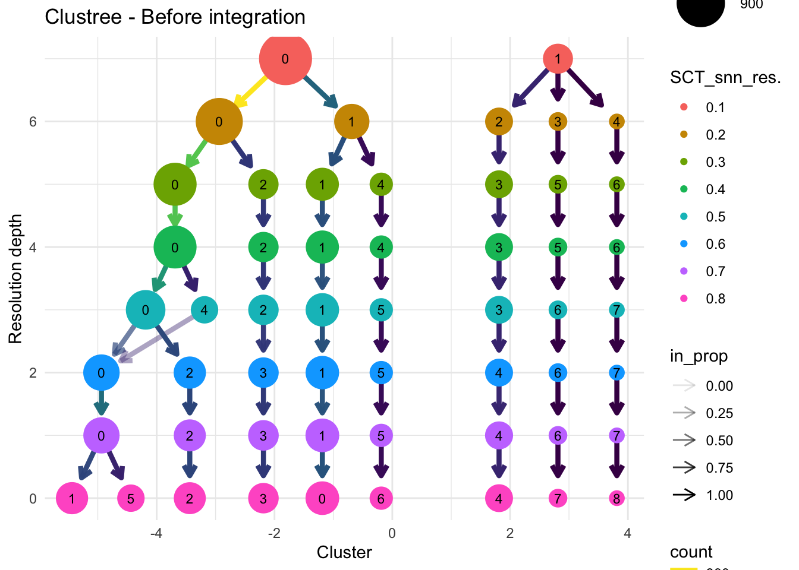
| Version | Author | Date |
|---|---|---|
| fc83bf1 | Sophie.Alice | 2026-07-10 |
DimPlot(Fibroblasts, reduction = "umap", shuffle = T, group.by = "SCT_snn_res.0.1")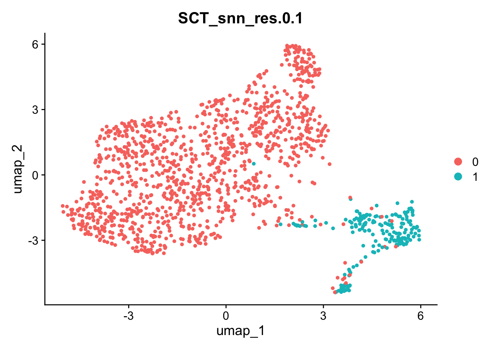
| Version | Author | Date |
|---|---|---|
| fc83bf1 | Sophie.Alice | 2026-07-10 |
DimPlot(Fibroblasts, reduction = "umap", shuffle = T, group.by = "SCT_snn_res.0.2")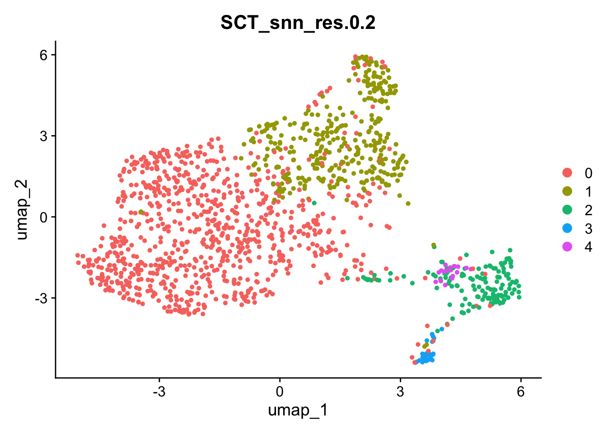
| Version | Author | Date |
|---|---|---|
| fc83bf1 | Sophie.Alice | 2026-07-10 |
DimPlot(Fibroblasts, reduction = "umap", shuffle = T, group.by = "SCT_snn_res.0.3")
| Version | Author | Date |
|---|---|---|
| fc83bf1 | Sophie.Alice | 2026-07-10 |
DimPlot(Fibroblasts, reduction = "umap", shuffle = T, group.by = "SCT_snn_res.0.4")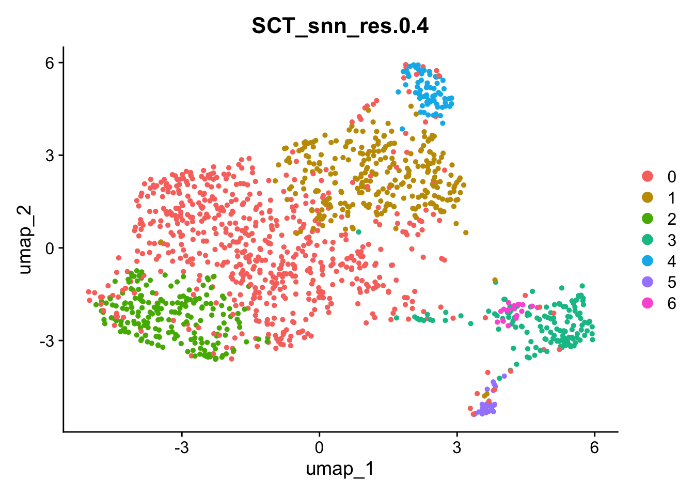
| Version | Author | Date |
|---|---|---|
| fc83bf1 | Sophie.Alice | 2026-07-10 |
DimPlot(Fibroblasts, reduction = "umap", shuffle = T, group.by = "SCT_snn_res.0.5")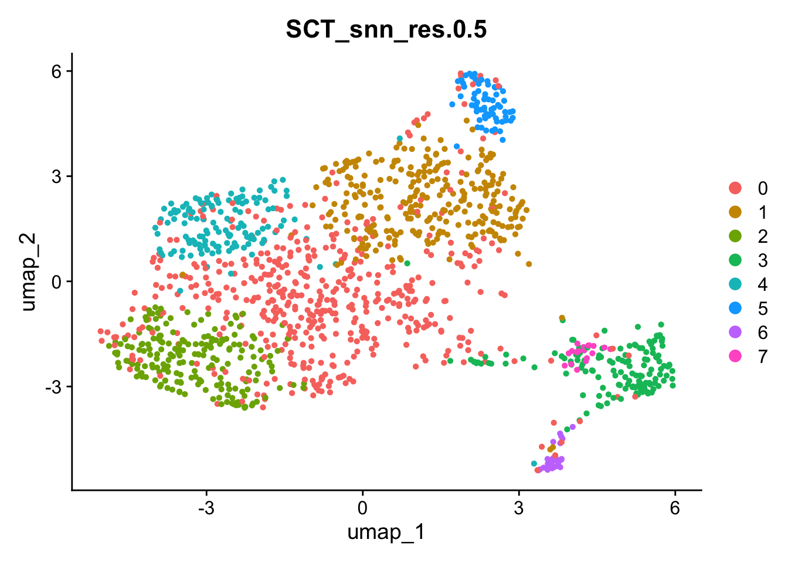
| Version | Author | Date |
|---|---|---|
| fc83bf1 | Sophie.Alice | 2026-07-10 |
DimPlot(Fibroblasts, reduction = "umap", shuffle = T, group.by = "orig.ident")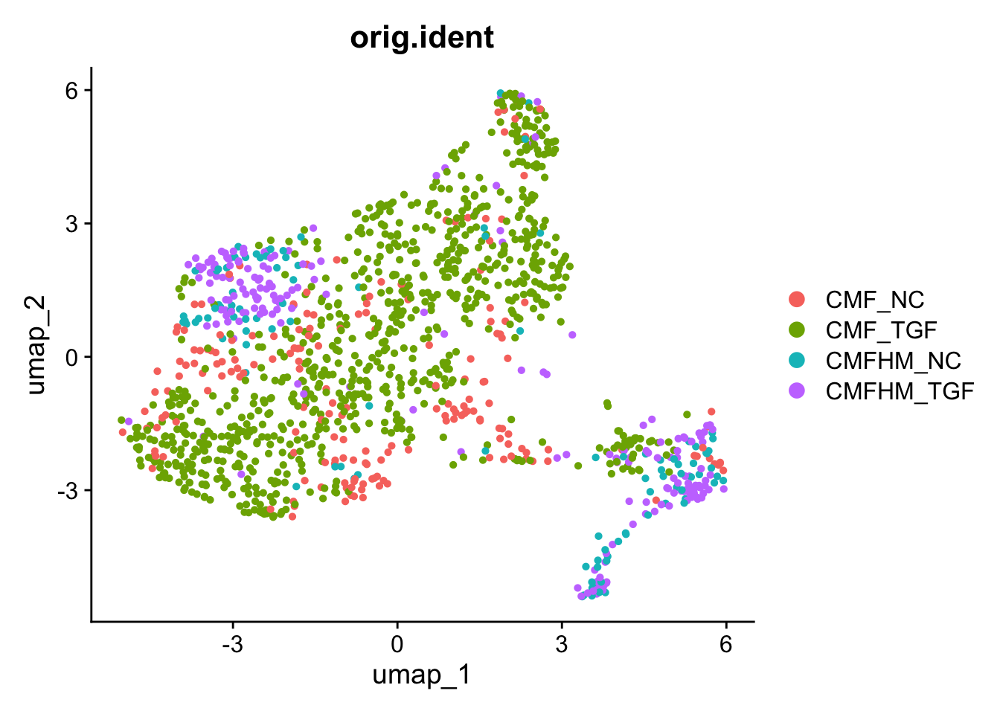
| Version | Author | Date |
|---|---|---|
| fc83bf1 | Sophie.Alice | 2026-07-10 |
##################################### integration
# Run Harmony to integrate
Fibroblasts <- RunHarmony(Fibroblasts,
group.by.vars = "orig.ident",
dims.use = 1:Dims,
plot_convergence = TRUE,
.options = harmony_options(max.iter.cluster = 100))Transposing data matrix
Using automatic lambda estimation
Thetas: 2
Initializing state using k-means centroids initializationInitializing centroidsHarmony 1/10
Harmony 2/10
Harmony 3/10
Harmony 4/10
Harmony 5/10
Harmony 6/10
Harmony converged after 6 iterations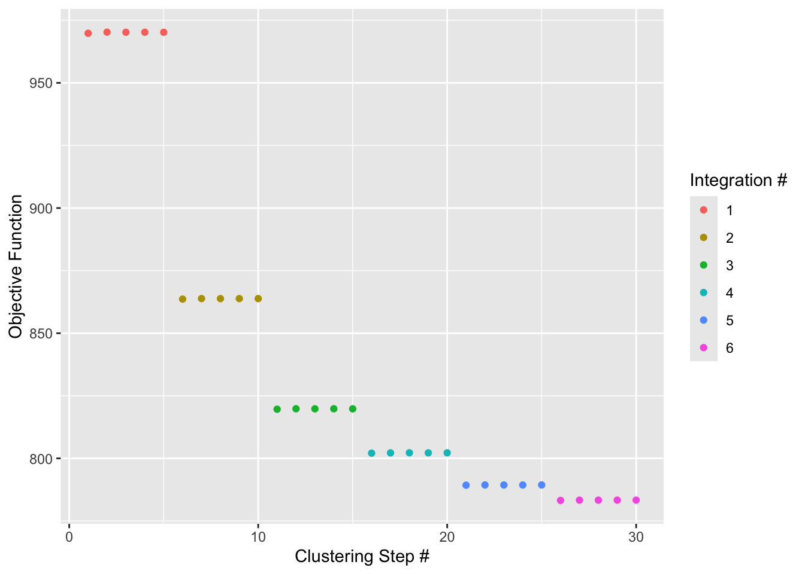
| Version | Author | Date |
|---|---|---|
| fc83bf1 | Sophie.Alice | 2026-07-10 |
##################################### Clustering with integration
DefaultAssay(Fibroblasts) <- "SCT"
Fibroblasts <- RunUMAP(Fibroblasts, dims = 1:Dims, reduction = "harmony")14:46:36 UMAP embedding parameters a = 0.9922 b = 1.112
14:46:36 Read 1354 rows and found 20 numeric columns
14:46:36 Using Annoy for neighbor search, n_neighbors = 30
14:46:36 Building Annoy index with metric = cosine, n_trees = 50
0% 10 20 30 40 50 60 70 80 90 100%
[----|----|----|----|----|----|----|----|----|----|
**************************************************|
14:46:36 Writing NN index file to temp file /var/folders/4w/_9gjjltx7r7__536sy6dcwbw0000gn/T//RtmpRAWARL/file57642100808e
14:46:36 Searching Annoy index using 1 thread, search_k = 3000
14:46:36 Annoy recall = 100%
14:46:36 Commencing smooth kNN distance calibration using 1 thread with target n_neighbors = 30
14:46:37 Initializing from normalized Laplacian + noise (using RSpectra)
14:46:37 Commencing optimization for 500 epochs, with 53146 positive edges
14:46:37 Using rng type: pcg
14:46:39 Optimization finishedFibroblasts <- FindNeighbors(Fibroblasts, dims = 1:Dims, reduction = "harmony")Computing nearest neighbor graph
Computing SNNFibroblasts <- FindClusters(Fibroblasts, graph.name = "SCT_snn", resolution = seq(0.1, 0.8, by=0.1))Modularity Optimizer version 1.3.0 by Ludo Waltman and Nees Jan van Eck
Number of nodes: 1354
Number of edges: 52573
Running Louvain algorithm...
Maximum modularity in 10 random starts: 0.9247
Number of communities: 4
Elapsed time: 0 seconds
Modularity Optimizer version 1.3.0 by Ludo Waltman and Nees Jan van Eck
Number of nodes: 1354
Number of edges: 52573
Running Louvain algorithm...
Maximum modularity in 10 random starts: 0.8694
Number of communities: 5
Elapsed time: 0 seconds
Modularity Optimizer version 1.3.0 by Ludo Waltman and Nees Jan van Eck
Number of nodes: 1354
Number of edges: 52573
Running Louvain algorithm...
Maximum modularity in 10 random starts: 0.8353
Number of communities: 5
Elapsed time: 0 seconds
Modularity Optimizer version 1.3.0 by Ludo Waltman and Nees Jan van Eck
Number of nodes: 1354
Number of edges: 52573
Running Louvain algorithm...
Maximum modularity in 10 random starts: 0.8143
Number of communities: 7
Elapsed time: 0 seconds
Modularity Optimizer version 1.3.0 by Ludo Waltman and Nees Jan van Eck
Number of nodes: 1354
Number of edges: 52573
Running Louvain algorithm...
Maximum modularity in 10 random starts: 0.7949
Number of communities: 8
Elapsed time: 0 seconds
Modularity Optimizer version 1.3.0 by Ludo Waltman and Nees Jan van Eck
Number of nodes: 1354
Number of edges: 52573
Running Louvain algorithm...
Maximum modularity in 10 random starts: 0.7756
Number of communities: 8
Elapsed time: 0 seconds
Modularity Optimizer version 1.3.0 by Ludo Waltman and Nees Jan van Eck
Number of nodes: 1354
Number of edges: 52573
Running Louvain algorithm...
Maximum modularity in 10 random starts: 0.7587
Number of communities: 9
Elapsed time: 0 seconds
Modularity Optimizer version 1.3.0 by Ludo Waltman and Nees Jan van Eck
Number of nodes: 1354
Number of edges: 52573
Running Louvain algorithm...
Maximum modularity in 10 random starts: 0.7432
Number of communities: 9
Elapsed time: 0 secondsclustree::clustree(Fibroblasts@meta.data[,grep("SCT_snn_res", colnames(Fibroblasts@meta.data))],
prefix = "SCT_snn_res.")+
labs(
title = "Clustree - After integration"
) +
xlab("Cluster") +
ylab("Resolution depth") +
theme_minimal(base_size = 11)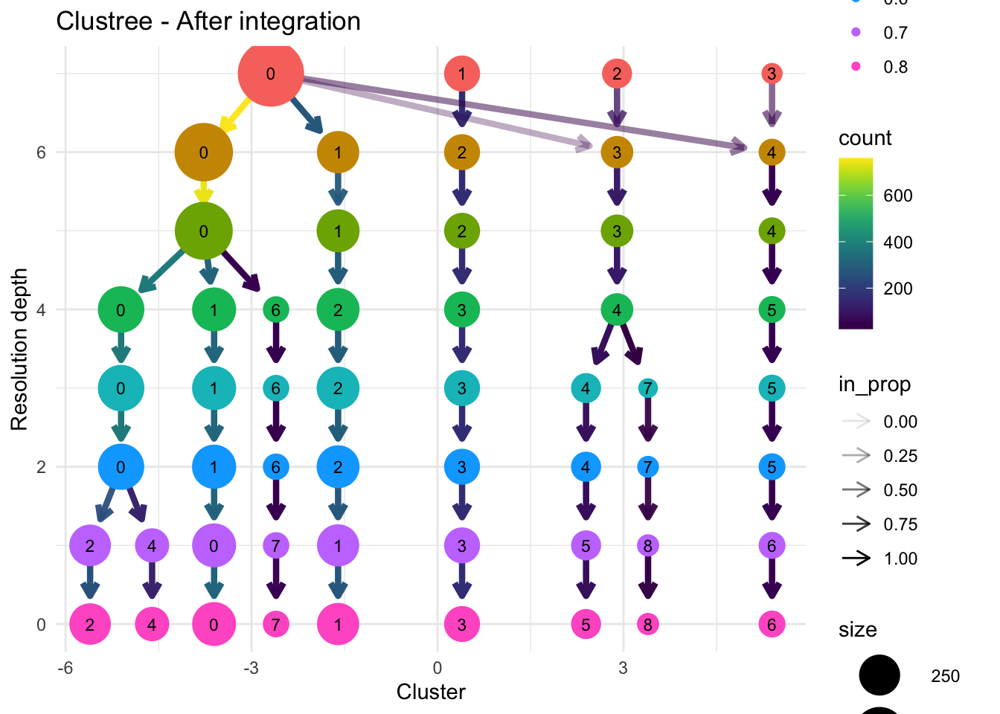
| Version | Author | Date |
|---|---|---|
| fc83bf1 | Sophie.Alice | 2026-07-10 |
DimPlot(Fibroblasts, reduction = "umap", shuffle = T, group.by = "SCT_snn_res.0.1")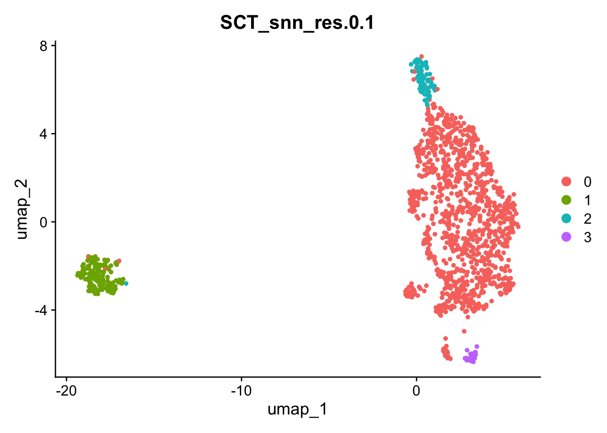
| Version | Author | Date |
|---|---|---|
| fc83bf1 | Sophie.Alice | 2026-07-10 |
DimPlot(Fibroblasts, reduction = "umap", shuffle = T, group.by = "SCT_snn_res.0.2")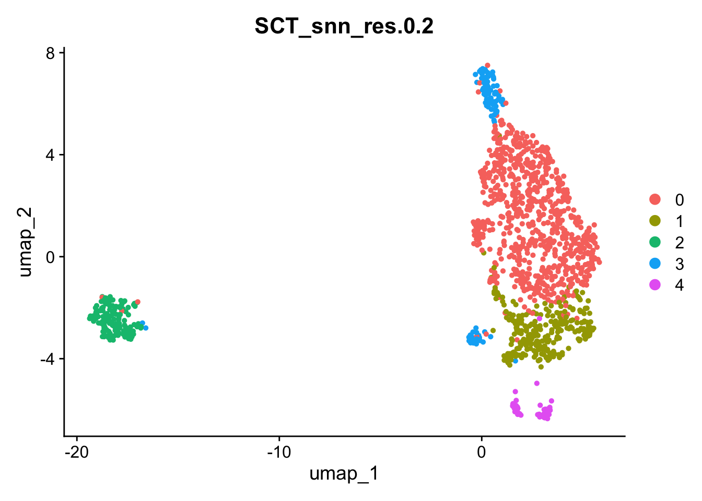
| Version | Author | Date |
|---|---|---|
| fc83bf1 | Sophie.Alice | 2026-07-10 |
DimPlot(Fibroblasts, reduction = "umap", shuffle = T, group.by = "SCT_snn_res.0.3")
| Version | Author | Date |
|---|---|---|
| fc83bf1 | Sophie.Alice | 2026-07-10 |
DimPlot(Fibroblasts, reduction = "umap", shuffle = T, group.by = "SCT_snn_res.0.4")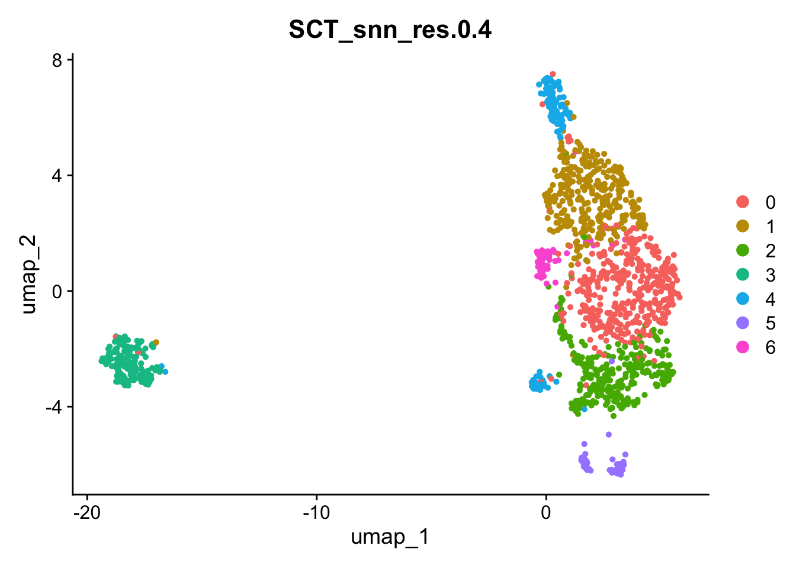
| Version | Author | Date |
|---|---|---|
| fc83bf1 | Sophie.Alice | 2026-07-10 |
DimPlot(Fibroblasts, reduction = "umap", shuffle = T, group.by = "SCT_snn_res.0.5")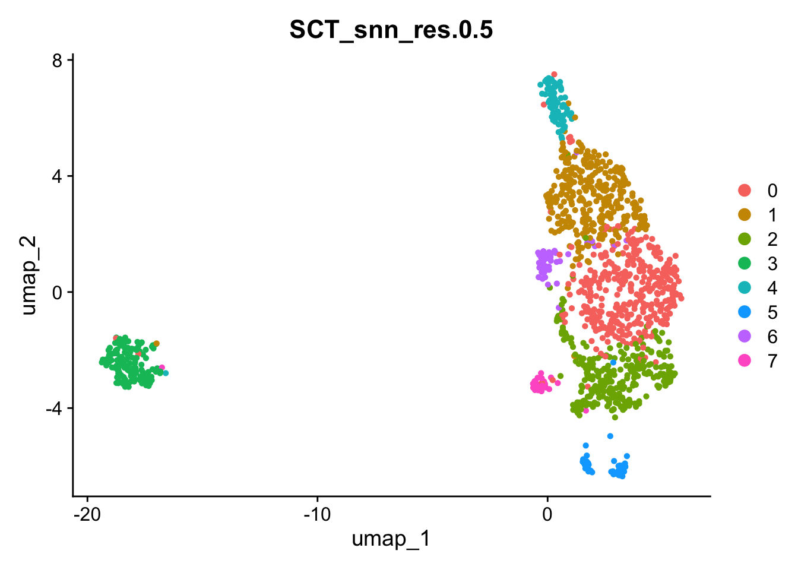
| Version | Author | Date |
|---|---|---|
| fc83bf1 | Sophie.Alice | 2026-07-10 |
DimPlot(Fibroblasts, reduction = "umap", shuffle = T, group.by = "orig.ident")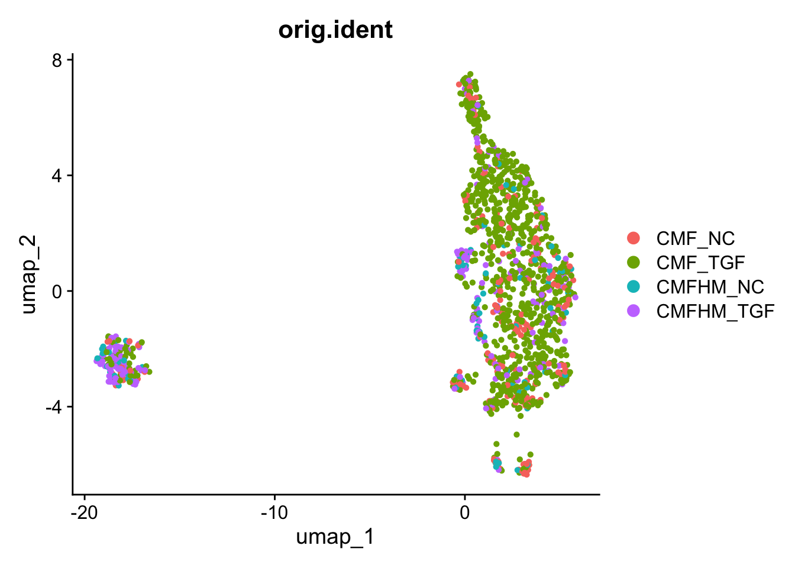
| Version | Author | Date |
|---|---|---|
| fc83bf1 | Sophie.Alice | 2026-07-10 |
DefaultAssay(Fibroblasts) <- "RNA"
Idents(Fibroblasts) <- "SCT_snn_res.0.5"
Markers <- FindAllMarkers(Fibroblasts, only.pos = TRUE, min.pct = 0.5, logfc.threshold = 0.5)Calculating cluster 0For a (much!) faster implementation of the Wilcoxon Rank Sum Test,
(default method for FindMarkers) please install the presto package
--------------------------------------------
install.packages('devtools')
devtools::install_github('immunogenomics/presto')
--------------------------------------------
After installation of presto, Seurat will automatically use the more
efficient implementation (no further action necessary).
This message will be shown once per sessionCalculating cluster 1Calculating cluster 2Calculating cluster 3Calculating cluster 4Calculating cluster 5Calculating cluster 6Calculating cluster 7Markers_top10 <- as.data.frame(Markers %>% group_by(cluster) %>% top_n(n = 10, wt = avg_log2FC))
Markers_top3 <- as.data.frame(Markers %>% group_by(cluster) %>% top_n(n = 3, wt = avg_log2FC))
Markers_top5 <- as.data.frame(Markers %>% group_by(cluster) %>% top_n(n = 5, wt = avg_log2FC))
create_table(Markers_top10)3.3 Heatmap vis
heatmap_cols <- colorRampPalette(RColorBrewer::brewer.pal(9,"RdBu"))(256)
heatmap_cols <- rev(heatmap_cols[1:256])
Heatmap <- DoHeatmap(Fibroblasts, cells = colnames(Fibroblasts), label = FALSE, draw.line = F, features = Markers_top10$gene, assay = "SCT") +
scale_fill_gradientn(colours = heatmap_cols) +
theme(axis.text.y = element_text(size = 5)) +
theme(plot.margin = unit(c(0.1, 0, 0, 0),
"inches"))Scale for fill is already present.
Adding another scale for fill, which will replace the existing scale.Heatmap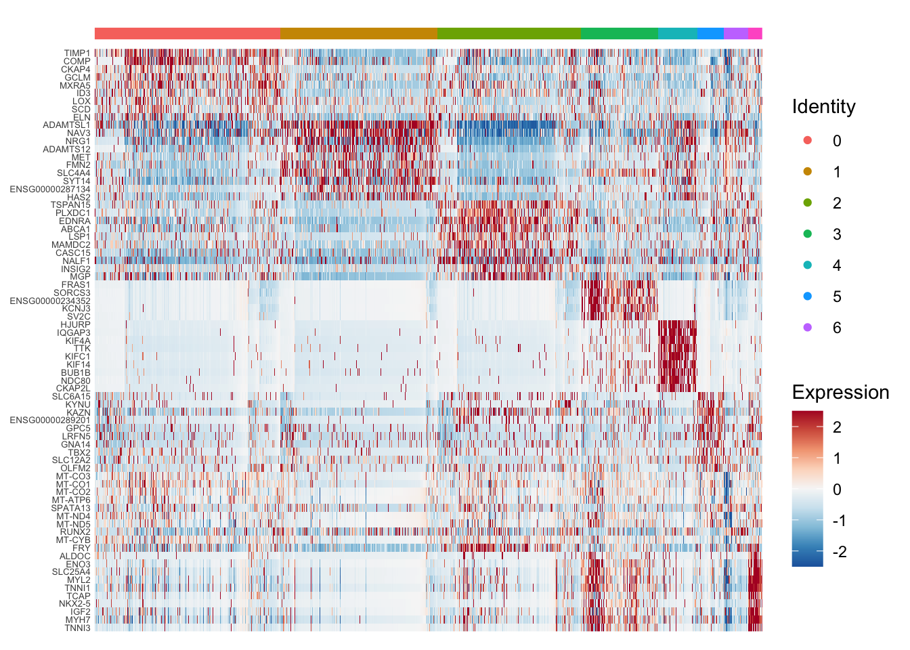
| Version | Author | Date |
|---|---|---|
| fc83bf1 | Sophie.Alice | 2026-07-10 |
3.4 VLN vis
table(Fibroblasts$SCT_snn_res.0.5)
0 1 2 3 4 5 6 7
377 318 291 157 80 53 50 28 VlnPlot(Fibroblasts, features = c("nCount_RNA", "nFeature_RNA", "percent.mt", "percent.rp", "scDblFinder.score"), ncol = 3, pt.size = 0) + theme(axis.title.x = element_blank())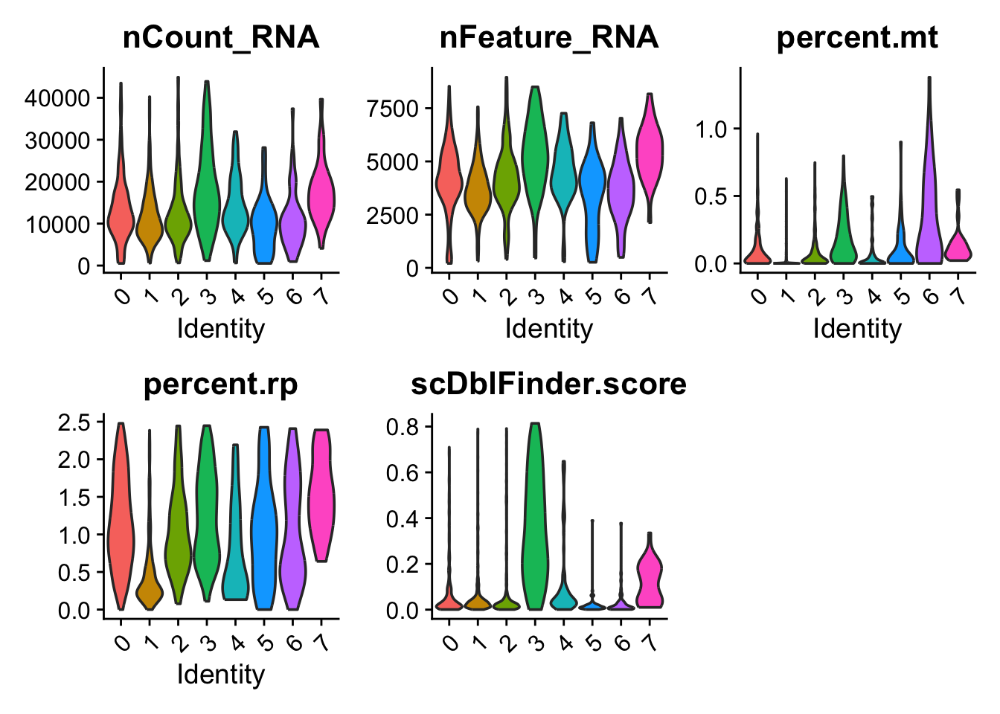
| Version | Author | Date |
|---|---|---|
| fc83bf1 | Sophie.Alice | 2026-07-10 |
FeaturePlot_scCustom(Fibroblasts, features = "TTN", pt.size = 0, reduction = "umap") +
theme(axis.title.x = element_blank()) # Cardiomyocyte marker
NOTE: FeaturePlot_scCustom uses a specified `na_cutoff` when plotting to
color cells with no expression as background color separate from color scale.
Please ensure `na_cutoff` value is appropriate for feature being plotted.
Default setting is appropriate for use when plotting from 'RNA' assay.
When `na_cutoff` not appropriate (e.g., module scores) set to NULL to
plot all cells in gradient color palette.
-----This message will be shown once per session.-----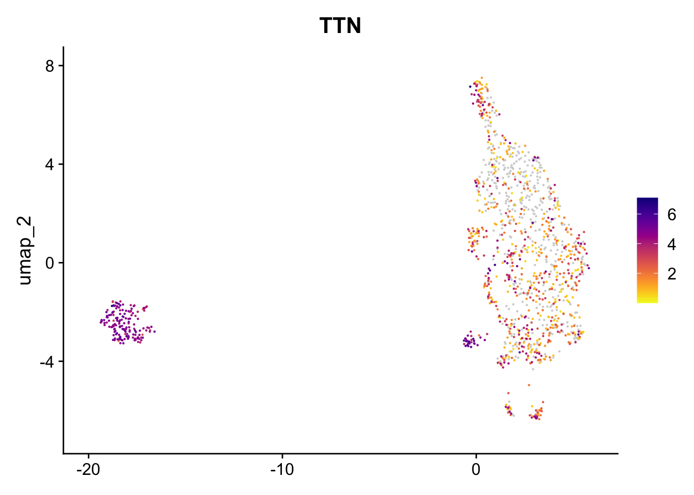
| Version | Author | Date |
|---|---|---|
| fc83bf1 | Sophie.Alice | 2026-07-10 |
## --> assumption = Cluster 3 is Cardiomyocyte and Fibroblast doublets?
VlnPlot_scCustom(Fibroblasts, features = dplyr::filter(Markers_top10, cluster == "6")$gene, num_columns = 5, pt.size = 0) + theme(axis.title.x = element_blank())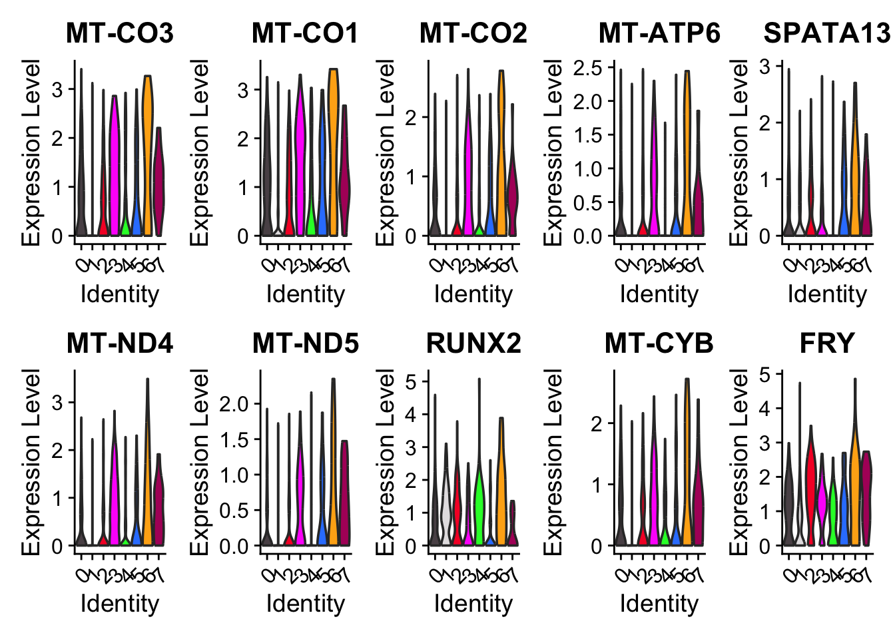
| Version | Author | Date |
|---|---|---|
| fc83bf1 | Sophie.Alice | 2026-07-10 |
## --> assumption = Cluster 6 is MT-Cells4 Feature Plots
FeaturePlot_scCustom(Fibroblasts, features = "CD163", pt.size = 0, reduction = "umap") +
theme(axis.title.x = element_blank()) # Macrophage marker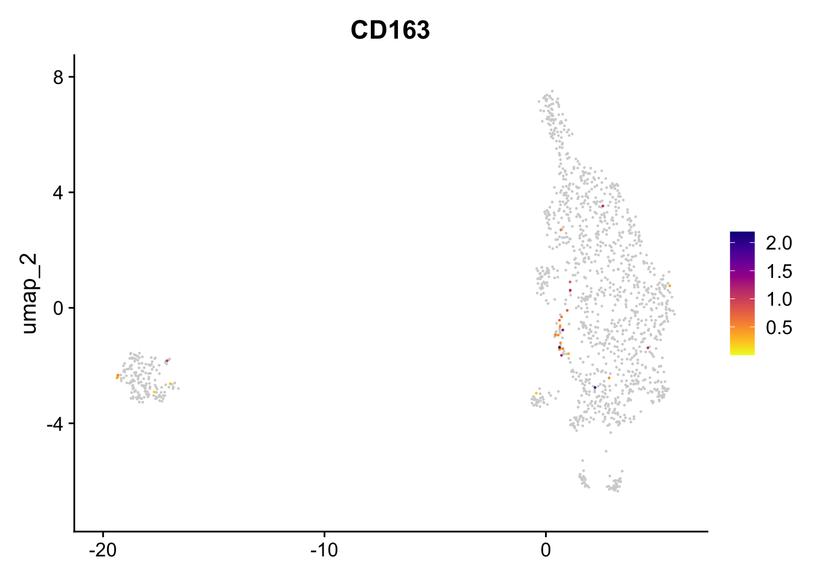
| Version | Author | Date |
|---|---|---|
| fc83bf1 | Sophie.Alice | 2026-07-10 |
FeaturePlot_scCustom(Fibroblasts, features = "FAP", pt.size = 0, reduction = "umap") +
theme(axis.title.x = element_blank()) # Activated Fibroblast Marker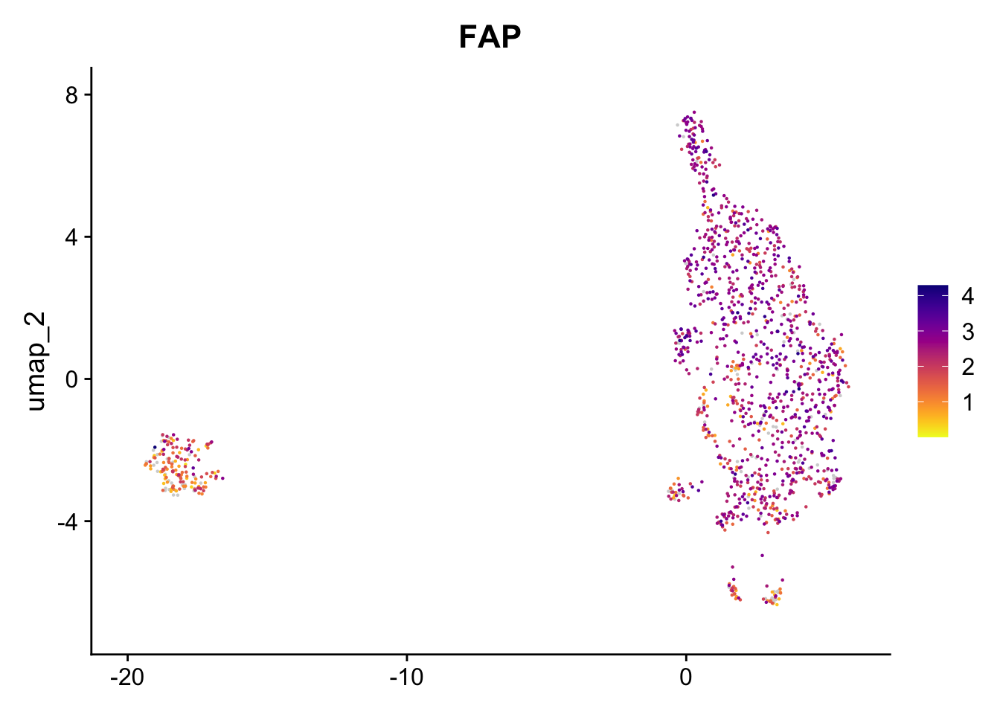
| Version | Author | Date |
|---|---|---|
| fc83bf1 | Sophie.Alice | 2026-07-10 |
FeaturePlot_scCustom(Fibroblasts, features = "TTN", pt.size = 0, reduction = "umap") +
theme(axis.title.x = element_blank()) # Cardiomyocyte marker
| Version | Author | Date |
|---|---|---|
| fc83bf1 | Sophie.Alice | 2026-07-10 |
## --> assumption = Cluster 3 is Cardiomyocyte and Fibroblast doublets?
DimPlot(Fibroblasts, reduction = "umap", shuffle = T,
group.by = "Phase")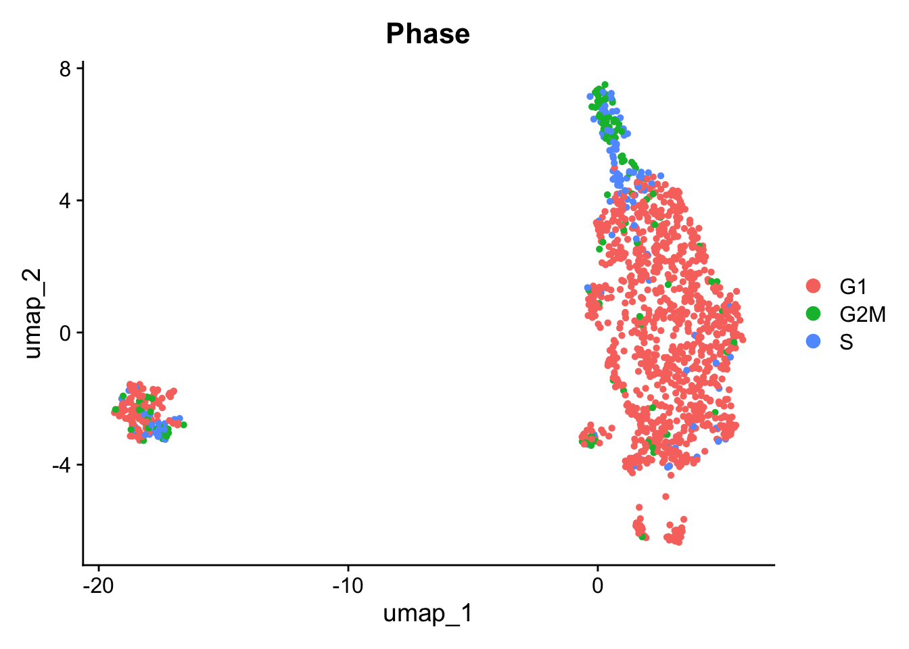
| Version | Author | Date |
|---|---|---|
| fc83bf1 | Sophie.Alice | 2026-07-10 |
# Remove only the clearly mitochondrial cluster and the left over doubles
Fibroblasts.clean <- subset(Fibroblasts, subset = SCT_snn_res.0.5 %in% c("0", "1", "2", "4", "5","7"))
DefaultAssay(Fibroblasts.clean) <- "SCT"
Fibroblasts.clean <- SplitObject(Fibroblasts.clean, split.by = "orig.ident")
features <- SelectIntegrationFeatures(object.list = Fibroblasts.clean, nfeatures = 3000)
Fibroblasts.clean <- merge(x = Fibroblasts.clean[[1]], y = Fibroblasts.clean[2:length(Fibroblasts.clean)], merge.data=TRUE)
VariableFeatures(Fibroblasts.clean) <- features
Fibroblasts.clean <- RunPCA(Fibroblasts.clean, npcs = 50)PC_ 1
Positive: ADAMTSL1, FRMD5, NAV3, NTM, NRG1, DDAH1, COL11A1, TENM3, ROBO2, ITGBL1
AFF3, SLC4A4, CRIM1, HS3ST3A1, DCBLD2, SEMA3C, LMO7, CDH2, PDGFC, PRICKLE1
SLC8A1, TPM1, TSPAN5, HAPLN1, TNC, SLC1A3, DIAPH3, ADAMTS12, RNF150, KIRREL3
Negative: SOX5, MGP, IGFBP5, SMOC1, LUM, EDNRA, S100A4, IGFBP3, CSGALNACT1, LAMA4
MMP14, B2M, COL3A1, FRY, COL1A1, CYP1B1, AEBP1, CEMIP, DCN, ABCA1
PDE3A, ANKH, SDC2, IL1R1, TSPAN15, LINC00511, SESN3, ITPR1, BGN, FTH1
PC_ 2
Positive: THBS1, ITGBL1, COMP, COL12A1, COL11A1, CALD1, TIMP1, TIMP3, ITGA11, ACTA2
ENSG00000286458, VGLL3, SERPINE1, GLS, COL8A1, LMO7, IGFBP7, FN1, STK38L, LIMA1
DDAH1, ATP10A, INHBA, TAGLN, EDIL3, SPARC, CACNB4, COL4A1, GCLM, CCN2
Negative: MIR924HG, CEP128, SMC4, BRIP1, ANLN, ASPM, CENPF, ATAD2, POLQ, NSD2
TPX2, KIF20B, TTN, MKI67, DIAPH3, CIT, LINC01572, NCAPG, TOP2A, SOX5
BARD1, HELLS, BUB1B, RFX8, CENPE, NUF2, NCAPG2, MELK, KIF4A, CENPK
PC_ 3
Positive: KIF26B, GPC6, RNF144A, MCC, ROBO2, CASC15, NAV3, DOCK4, SEMA3A, ZNF521
SOX5, ZEB1, ARL15, BICC1, AFF3, TRPS1, MSR1, NEAT1, PTPRG, PRKG1
ADAMTS14, ABCA1, ANKH, FMNL2, ANTXR1, FOXP2, EDNRA, PTPRK, SETBP1, MIR31HG
Negative: VIM, COL1A1, DIAPH3, ACTB, SPARC, ACTG1, S100A6, LGALS1, S100A4, TIMP1
GAPDH, CD63, B2M, CENPF, EEF1A1, TPX2, PDIA3, PFN1, PPIB, TOP2A
FSTL1, MKI67, HSP90B1, ANLN, TMSB4X, CCN2, HSPA5, COL3A1, COL1A2, BGN
PC_ 4
Positive: TNC, HMGA2, RFX8, VEGFC, WNT5A, XYLT1, MYO10, ENSG00000253496, SNED1, ARHGAP22
SYT14, MIR222HG, CLMP, APCDD1L, DELEC1, COL6A2, DOCK10, CD44, COL6A1, PDGFRB
NTNG1, NT5E, BNC2, TSPAN5, SPRED1, ABI3BP, CSGALNACT1, APCDD1L-DT, EXT1, TWIST2
Negative: TTN, TNNT2, NEBL, ACTC1, MYL7, PLN, RYR2, MYH7, MYL3, CTNNA3
CSRP3, MYH6, MYL4, FHOD3, TNNI1, ACTN2, TECRL, FHL2, DMD, ZFPM2
CMYA5, LDB3, MYOM1, FILIP1, COL11A1, NCAM1, SLC8A1, MYL2, MYOCD, TNNC1
PC_ 5
Positive: HMGA2, SQSTM1, DCBLD2, LINC01050, S100A6, MAP4K4, CNIH3, FRMD5, RFX8, PHLDA1
ROBO2, BAALC, JARID2, FTH1, SEMA5A, CHI3L1, SLC7A11, ENOX1, CTSB, PVT1
DPP4, CA12, TXNRD1, CLSTN2, ARHGAP22, PSAP, TBX3, DOCK10, GDF15, HMOX1
Negative: CEMIP, KCNQ5, ERG, COL12A1, NALF1, CHSY3, DDAH1, COL4A2, ABI3BP, LDLRAD4
ADAMTS6, COL8A1, HMCN1, PIEZO2, CENPP, ITGBL1, SULF1, FRY, COL4A1, PDE3A
ATP10A, EFNA5, NEGR1, UACA, NAV2, RBMS3, LMO7, ELN, GLS, FBN1 Fibroblasts.clean <- RunHarmony(Fibroblasts.clean,
group.by.vars = c("orig.ident"),
dims.use = 1:Dims,
plot_convergence=TRUE,
.options = harmony_options(
max.iter.cluster = 100,
)
)Transposing data matrixUsing automatic lambda estimationThetas: 2Initializing state using k-means centroids initializationInitializing centroidsHarmony 1/10Harmony 2/10Harmony 3/10Harmony 4/10Harmony 5/10Harmony 6/10Harmony converged after 6 iterations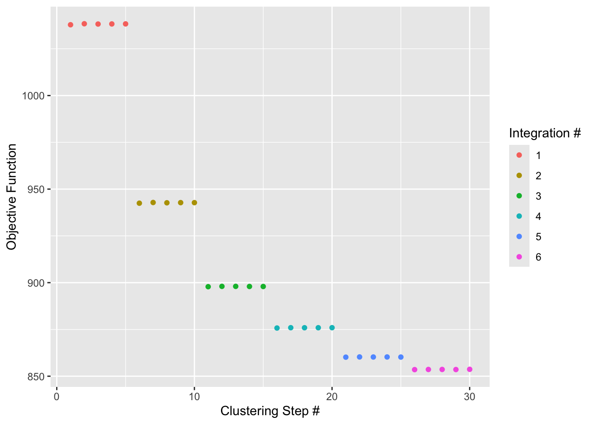
| Version | Author | Date |
|---|---|---|
| fc83bf1 | Sophie.Alice | 2026-07-10 |
DefaultAssay(Fibroblasts.clean) <- "SCT"
Fibroblasts.clean <- RunUMAP(Fibroblasts.clean, dims = 1:Dims, reduction = "harmony")14:47:02 UMAP embedding parameters a = 0.9922 b = 1.11214:47:02 Read 1147 rows and found 20 numeric columns14:47:02 Using Annoy for neighbor search, n_neighbors = 3014:47:02 Building Annoy index with metric = cosine, n_trees = 500% 10 20 30 40 50 60 70 80 90 100%[----|----|----|----|----|----|----|----|----|----|**************************************************|
14:47:02 Writing NN index file to temp file /var/folders/4w/_9gjjltx7r7__536sy6dcwbw0000gn/T//RtmpRAWARL/file57642b7ca8f4
14:47:02 Searching Annoy index using 1 thread, search_k = 3000
14:47:02 Annoy recall = 100%
14:47:03 Commencing smooth kNN distance calibration using 1 thread with target n_neighbors = 30
14:47:03 Initializing from normalized Laplacian + noise (using RSpectra)
14:47:03 Commencing optimization for 500 epochs, with 44318 positive edges
14:47:03 Using rng type: pcg
14:47:05 Optimization finishedFibroblasts.clean <- FindNeighbors(Fibroblasts.clean, dims = 1:Dims, reduction = "harmony")Computing nearest neighbor graph
Computing SNNFibroblasts.clean <- FindClusters(Fibroblasts.clean, resolution = seq(0.1, 0.8, by=0.1))Modularity Optimizer version 1.3.0 by Ludo Waltman and Nees Jan van Eck
Number of nodes: 1147
Number of edges: 46845
Running Louvain algorithm...
Maximum modularity in 10 random starts: 0.9051
Number of communities: 2
Elapsed time: 0 seconds
Modularity Optimizer version 1.3.0 by Ludo Waltman and Nees Jan van Eck
Number of nodes: 1147
Number of edges: 46845
Running Louvain algorithm...
Maximum modularity in 10 random starts: 0.8501
Number of communities: 4
Elapsed time: 0 seconds
Modularity Optimizer version 1.3.0 by Ludo Waltman and Nees Jan van Eck
Number of nodes: 1147
Number of edges: 46845
Running Louvain algorithm...
Maximum modularity in 10 random starts: 0.8172
Number of communities: 5
Elapsed time: 0 seconds
Modularity Optimizer version 1.3.0 by Ludo Waltman and Nees Jan van Eck
Number of nodes: 1147
Number of edges: 46845
Running Louvain algorithm...
Maximum modularity in 10 random starts: 0.7901
Number of communities: 5
Elapsed time: 0 seconds
Modularity Optimizer version 1.3.0 by Ludo Waltman and Nees Jan van Eck
Number of nodes: 1147
Number of edges: 46845
Running Louvain algorithm...
Maximum modularity in 10 random starts: 0.7649
Number of communities: 7
Elapsed time: 0 seconds
Modularity Optimizer version 1.3.0 by Ludo Waltman and Nees Jan van Eck
Number of nodes: 1147
Number of edges: 46845
Running Louvain algorithm...
Maximum modularity in 10 random starts: 0.7429
Number of communities: 7
Elapsed time: 0 seconds
Modularity Optimizer version 1.3.0 by Ludo Waltman and Nees Jan van Eck
Number of nodes: 1147
Number of edges: 46845
Running Louvain algorithm...
Maximum modularity in 10 random starts: 0.7248
Number of communities: 8
Elapsed time: 0 seconds
Modularity Optimizer version 1.3.0 by Ludo Waltman and Nees Jan van Eck
Number of nodes: 1147
Number of edges: 46845
Running Louvain algorithm...
Maximum modularity in 10 random starts: 0.7090
Number of communities: 10
Elapsed time: 0 secondsclustree::clustree(Fibroblasts.clean@meta.data[,grep("SCT_snn_res", colnames(Fibroblasts.clean@meta.data))],
prefix = "SCT_snn_res.")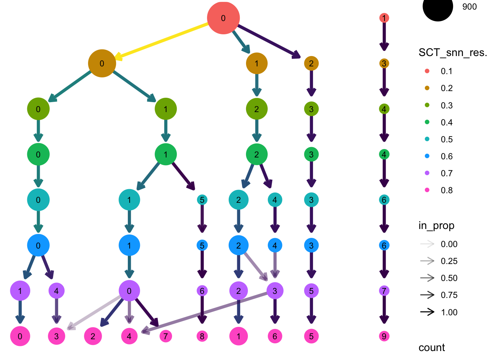
| Version | Author | Date |
|---|---|---|
| fc83bf1 | Sophie.Alice | 2026-07-10 |
DimPlot(Fibroblasts.clean, reduction = "umap", shuffle = T, group.by = "SCT_snn_res.0.1")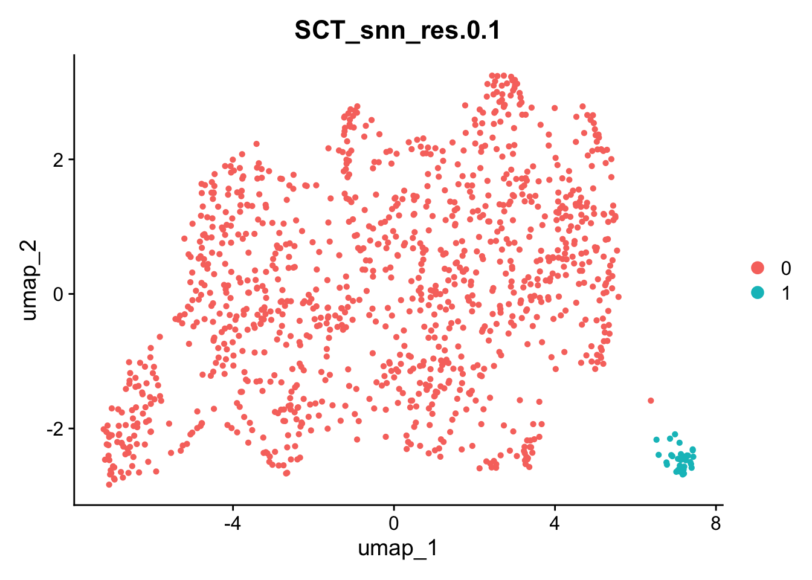
| Version | Author | Date |
|---|---|---|
| fc83bf1 | Sophie.Alice | 2026-07-10 |
DimPlot(Fibroblasts.clean, reduction = "umap", shuffle = T, group.by = "SCT_snn_res.0.2")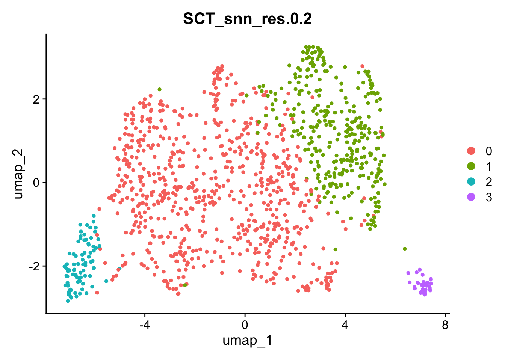
| Version | Author | Date |
|---|---|---|
| fc83bf1 | Sophie.Alice | 2026-07-10 |
DimPlot(Fibroblasts.clean, reduction = "umap", shuffle = T, group.by = "SCT_snn_res.0.3")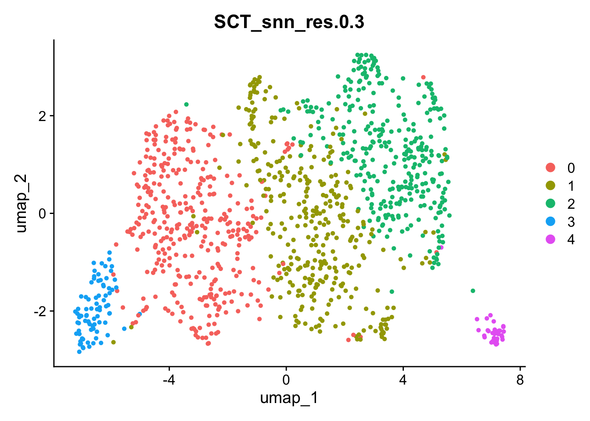
| Version | Author | Date |
|---|---|---|
| fc83bf1 | Sophie.Alice | 2026-07-10 |
DimPlot(Fibroblasts.clean, reduction = "umap", shuffle = T, group.by = "orig.ident")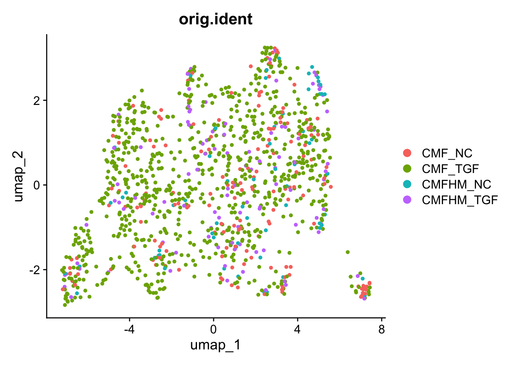
| Version | Author | Date |
|---|---|---|
| fc83bf1 | Sophie.Alice | 2026-07-10 |
DimPlot(Fibroblasts.clean, reduction = "umap", shuffle = T, group.by = "Phase")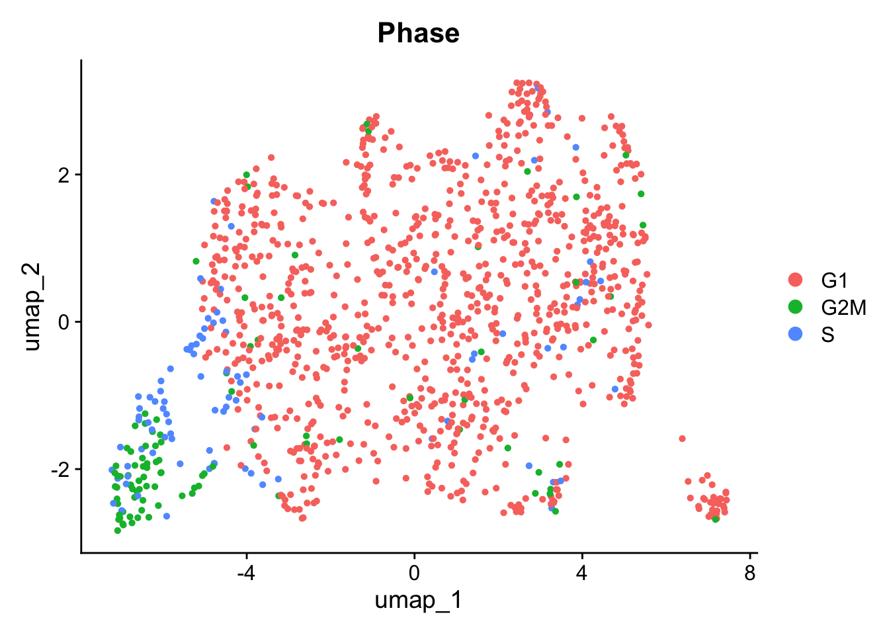
| Version | Author | Date |
|---|---|---|
| fc83bf1 | Sophie.Alice | 2026-07-10 |
DefaultAssay(Fibroblasts.clean) <- "RNA"
Idents(Fibroblasts.clean) <- "SCT_snn_res.0.3"
Markers.2 <- FindAllMarkers(Fibroblasts.clean, only.pos = TRUE, min.pct = 0.5, logfc.threshold = 0.5)Calculating cluster 0
Calculating cluster 1
Calculating cluster 2
Calculating cluster 3
Calculating cluster 4Markers_top10.2 <- as.data.frame(Markers.2 %>% group_by(cluster) %>% top_n(n = 10, wt = avg_log2FC))
Markers_top3.2 <- as.data.frame(Markers.2 %>% group_by(cluster) %>% top_n(n = 3, wt = avg_log2FC))
Markers_top5.2 <- as.data.frame(Markers.2 %>% group_by(cluster) %>% top_n(n = 5, wt = avg_log2FC))
SCpubr::do_DotPlot(Fibroblasts.clean,
features = Markers_top5.2$gene,
dot.scale = 10,
plot.title = "Top 5 markers per cluster") 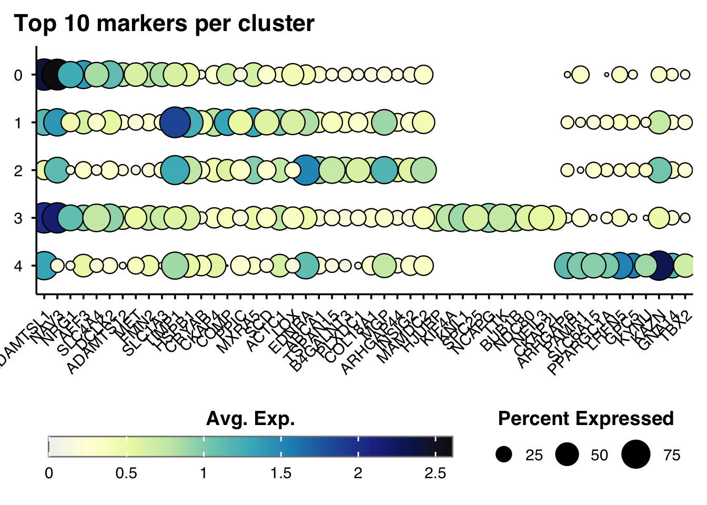
create_table(Markers_top10.2)VlnPlot(Fibroblasts.clean,
features = c("nCount_RNA", "nFeature_RNA", "percent.mt"),
group.by = "SCT_snn_res.0.3",
pt.size = 0.1)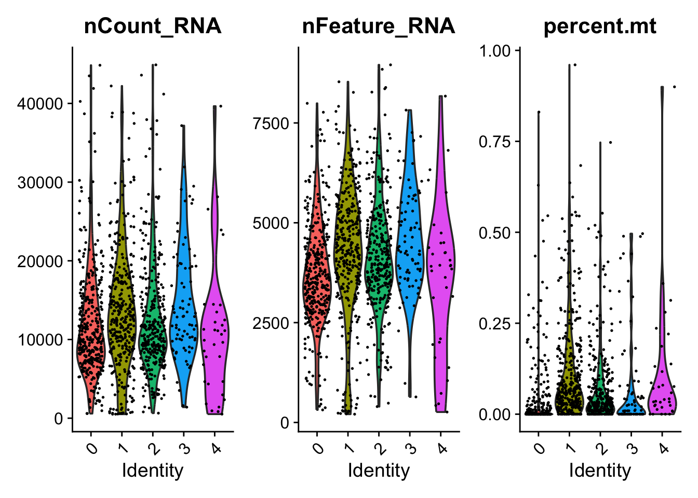
| Version | Author | Date |
|---|---|---|
| fc83bf1 | Sophie.Alice | 2026-07-10 |
gradient_colors <- custom_palette(4)
cellCounts1 <- as.data.frame(table(Celltype = Fibroblasts.clean$SCT_snn_res.0.2, sample = Fibroblasts.clean$orig.ident))
ggplot(data = cellCounts1, aes(x = sample, fill = Celltype, y = Freq)) +
geom_bar(stat = "identity") +
theme_bw() +
scale_fill_manual(values = gradient_colors) +
theme(axis.text.x = element_text(angle = 45, hjust = 1)) +
labs(title = "Proportions across Identities", x = "", y = "fraction of cells")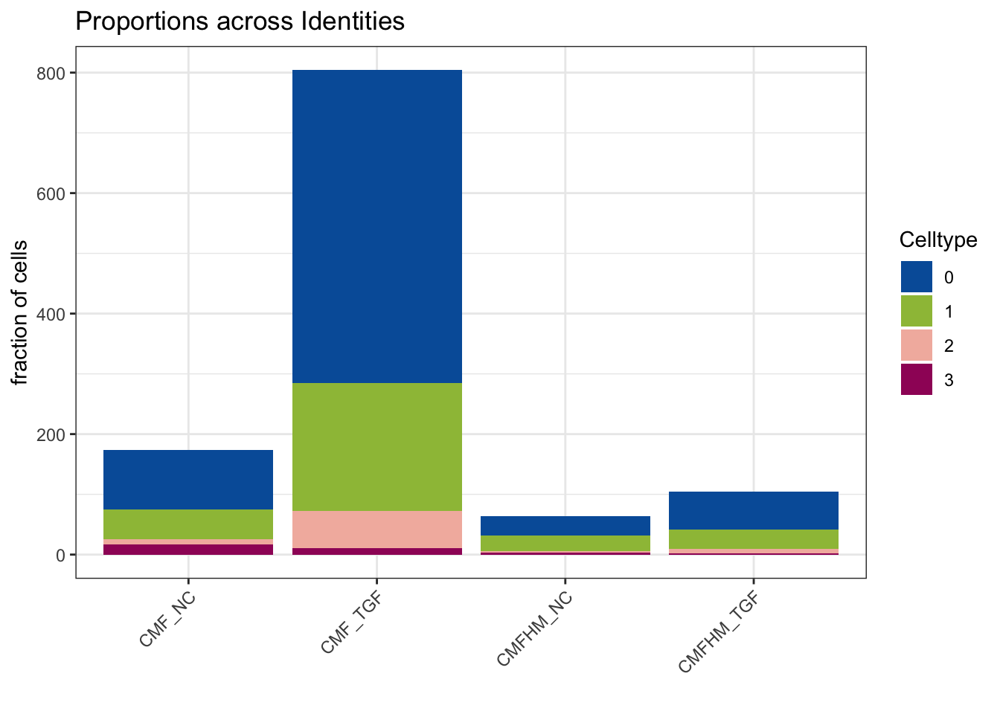
| Version | Author | Date |
|---|---|---|
| fc83bf1 | Sophie.Alice | 2026-07-10 |
table(Fibroblasts.clean$orig.ident) # --> Proportions too different to sinvoll subsets machen.
CMF_NC CMF_TGF CMFHM_NC CMFHM_TGF
174 804 64 105 4.1 Biomarkers from Gino DCM subclustering analysis
gino.markers <- c("ACSM3", "PDZRN4", "FGF14", "KAZN", "NFATC2",
"POSTN", "ACTA2", "FAP", "VIM", "COL1A1", "FN1", "SHISA6", "CNTNAP2", "NFATC2")
plot_features(Fibroblasts.clean, features = gino.markers,
title = "Modified Fibroblast Subset", subtitle = "Gino Markers")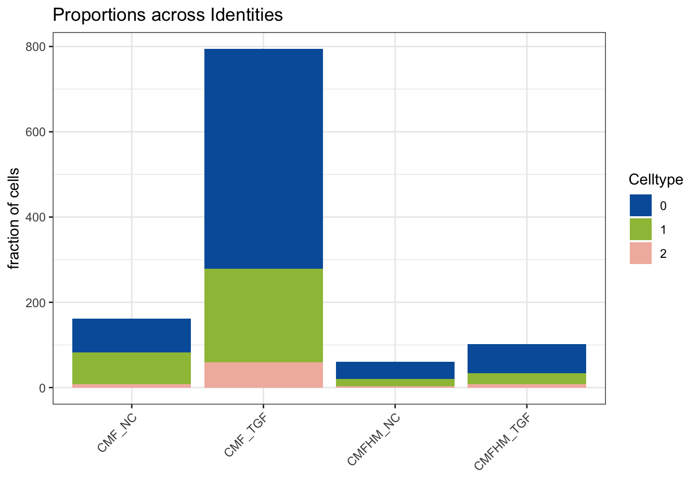
| Version | Author | Date |
|---|---|---|
| a41e2a7 | Sophie.Alice | 2026-07-15 |
4.2 Biomarkers obtained through small talk with chatgpt (Maks and Magda):
chat.markers <- c("COL1A1", "TNC", "COL3A1", "FN1", # fibroblasty produkujące ECM
"FOS", "JUN", "EGR1", "HSPA1A", # fibroblasty stresowe
"COL15A1", "CD34", "PI16") # fibroblasty związane zremodellingiem naczyń
chat.markers2 <- c("ACTA2", "TAGLN", "MYH11", "CCN2", # miofibroblasty
"POSTN", "FAP", "CTHRC1", "COMP", # fibroblasty związane z włóknieniem
"DCN", "LUM", "DPT", "SHISA6") # fibroblasty rezydentne
plot_features(Fibroblasts.clean, features = chat.markers,
title = "Modified Fibroblast Subset", subtitle = "Chat Markers")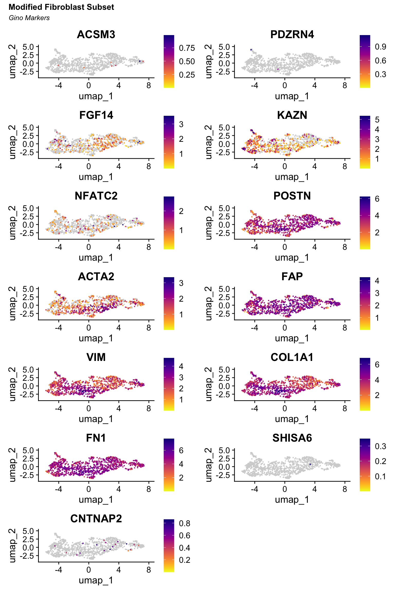
| Version | Author | Date |
|---|---|---|
| a41e2a7 | Sophie.Alice | 2026-07-15 |
plot_features(Fibroblasts.clean, features = chat.markers2,
title = "Modified Fibroblast Subset", subtitle = "Chat Markers")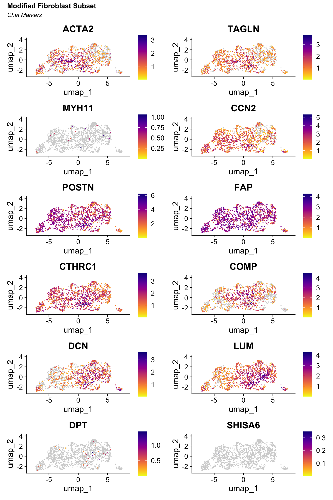
| Version | Author | Date |
|---|---|---|
| a41e2a7 | Sophie.Alice | 2026-07-15 |
4.3 Biomarkers from Reichart paper:
# lipogenic markers
Reichard.lipo <- c("APOD", "APOE", "CST3")
plot_features(Fibroblasts.clean, features = Reichard.lipo,
title = "Modified Fibroblast Subset", subtitle = "Reichart lipogenic Markers")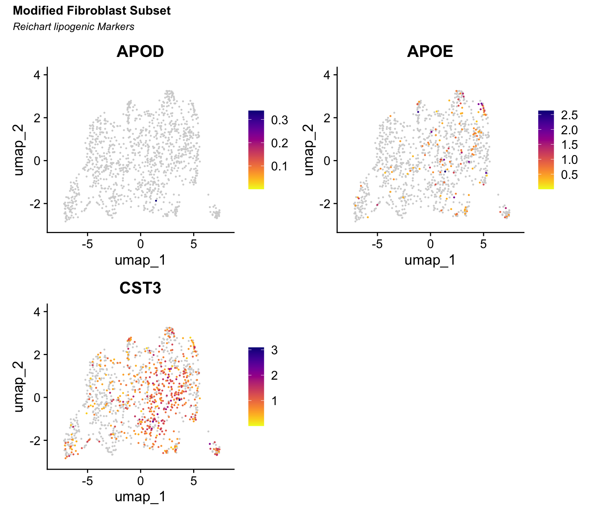
| Version | Author | Date |
|---|---|---|
| a41e2a7 | Sophie.Alice | 2026-07-15 |
# Cytoskeletal markers
Reichard.cytosk <- c("DAAM1", "GPC6")
plot_features(Fibroblasts.clean, features = Reichard.cytosk,
title = "Modified Fibroblast Subset", subtitle = "Reichart Cytoskeletal Markers")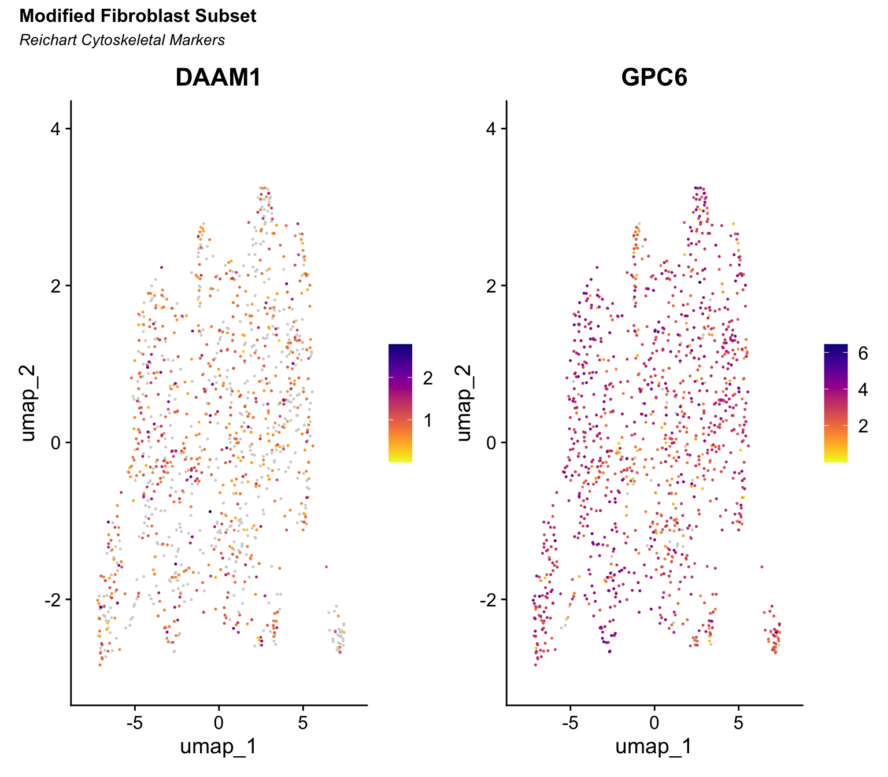
| Version | Author | Date |
|---|---|---|
| a41e2a7 | Sophie.Alice | 2026-07-15 |
# biomarkers_inflammatory
Reichard.inflm <- c("CCL2", "IL6ST", "OSMR")
plot_features(Fibroblasts.clean, features = Reichard.inflm,
title = "Modified Fibroblast Subset", subtitle = "Reichart inflammatory Markers")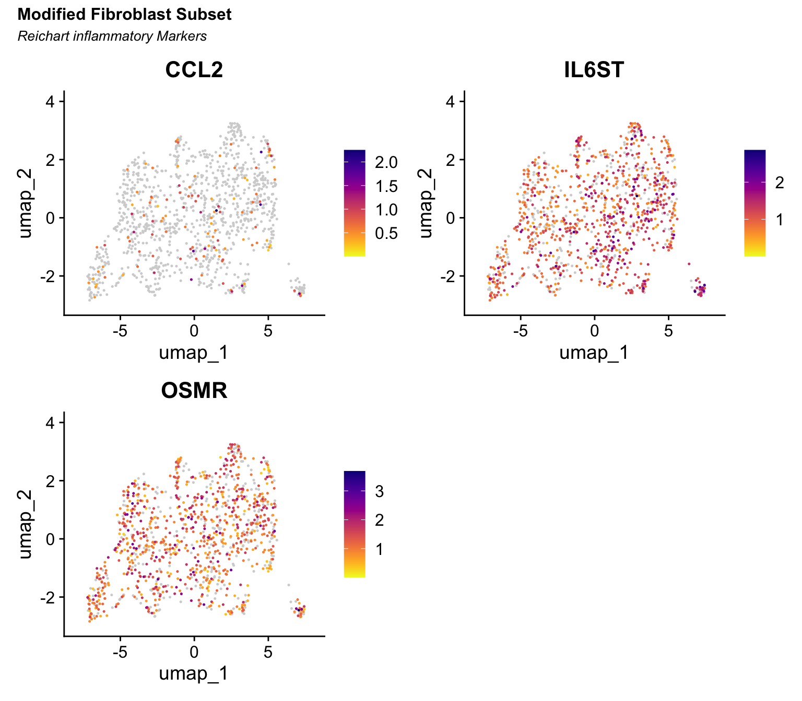
| Version | Author | Date |
|---|---|---|
| a41e2a7 | Sophie.Alice | 2026-07-15 |
# biomarkers_fibrosis
Reichard.fibrosis <- c("TGFB2", "PCOLCE2", "COL4A1", "COL4A2")
plot_features(Fibroblasts.clean, features = Reichard.fibrosis,
title = "Modified Fibroblast Subset", subtitle = "Reichart fibrosis Markers")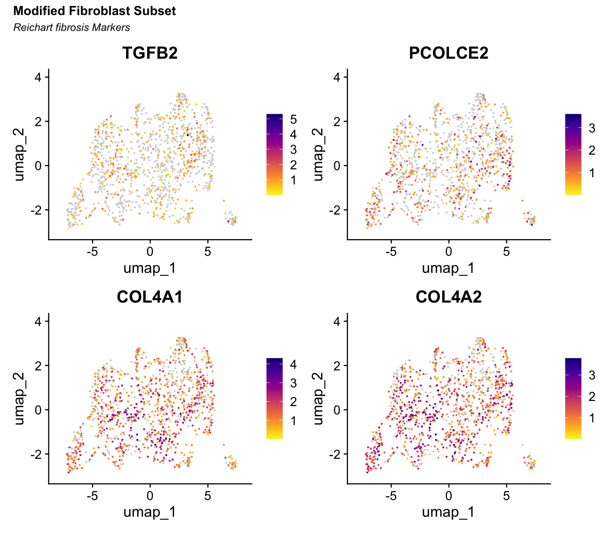
| Version | Author | Date |
|---|---|---|
| a41e2a7 | Sophie.Alice | 2026-07-15 |
4.4 Biomarkers from Maatz publication:
maatz.markers <- c("MGP", "APOD", "CFD", "GSN", "SERPINF1")
plot_features(Fibroblasts.clean, features = maatz.markers,
title = "Modified Fibroblast Subset", subtitle = "Maatz Markers")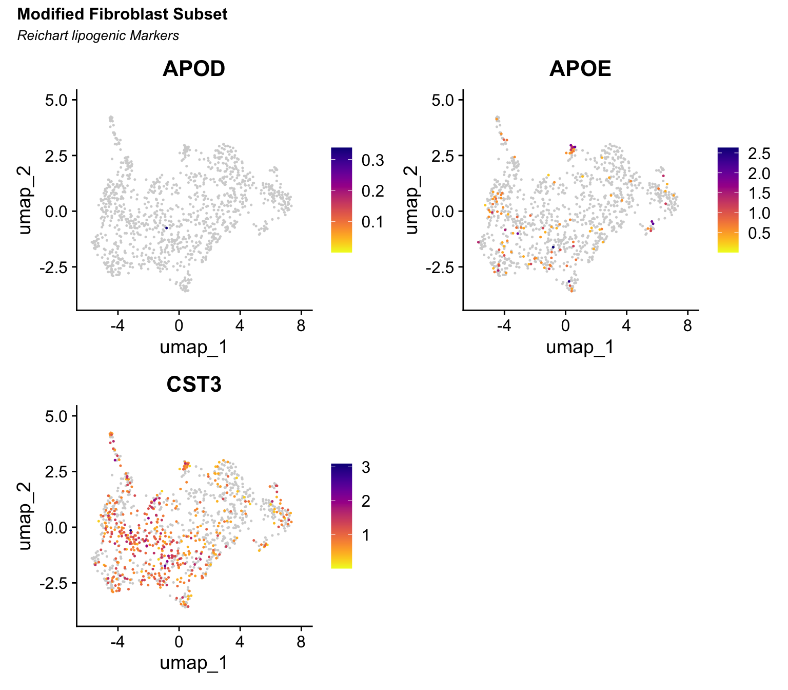
| Version | Author | Date |
|---|---|---|
| a41e2a7 | Sophie.Alice | 2026-07-15 |
4.5 Biomarkers Gabi
gabi.markers <- c("COMP", "CLIP1", "CHAD", "THBS4",
"PDPN", "DYSF", "POSTN",
"FAP", "ACTA2", "MXRA5",
"FOSL2")
plot_features(Fibroblasts.clean, features = gabi.markers,
title = "Modified Fibroblast Subset", subtitle = "Gabi Markers")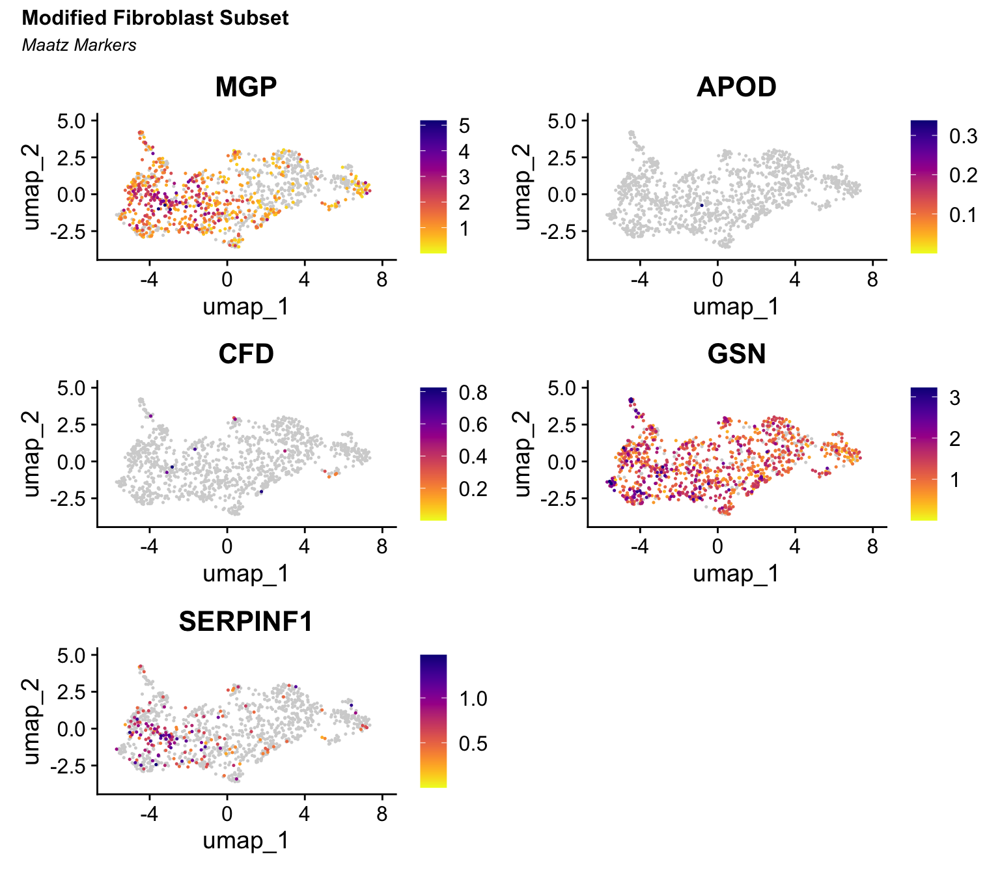
| Version | Author | Date |
|---|---|---|
| a41e2a7 | Sophie.Alice | 2026-07-15 |
sessionInfo()R version 4.6.0 (2026-04-24)
Platform: aarch64-apple-darwin23
Running under: macOS Sequoia 15.7.7
Matrix products: default
BLAS: /Library/Frameworks/R.framework/Versions/4.6/Resources/lib/libRblas.0.dylib
LAPACK: /Library/Frameworks/R.framework/Versions/4.6/Resources/lib/libRlapack.dylib; LAPACK version 3.12.1
locale:
[1] en_US.UTF-8/en_US.UTF-8/en_US.UTF-8/C/en_US.UTF-8/en_US.UTF-8
time zone: Europe/Zurich
tzcode source: internal
attached base packages:
[1] stats4 stats graphics grDevices utils datasets methods
[8] base
other attached packages:
[1] future_1.70.0 ggrain_0.1.2
[3] enrichplot_1.32.0 ggforce_0.5.0
[5] DT_0.34.0 UCell_2.16.0
[7] assertthat_0.2.1 SCpubr_3.0.1
[9] forcats_1.0.1 fgsea_1.38.0
[11] DOSE_4.6.0 GO.db_3.23.1
[13] org.Hs.eg.db_3.23.1 AnnotationDbi_1.74.0
[15] clusterProfiler_4.20.0 ggtangle_0.1.2
[17] ggarchery_0.4.4 EnhancedVolcano_1.30.0
[19] tibble_3.3.1 MAST_1.38.0
[21] speckle_1.12.0 harmony_2.0.5
[23] Rcpp_1.1.1-1.1 clustree_0.5.1
[25] ggraph_2.2.2 scDblFinder_1.26.2
[27] SingleCellExperiment_1.34.0 SummarizedExperiment_1.42.0
[29] Biobase_2.72.0 GenomicRanges_1.64.0
[31] Seqinfo_1.2.0 IRanges_2.46.0
[33] S4Vectors_0.50.1 BiocGenerics_0.58.1
[35] generics_0.1.4 MatrixGenerics_1.24.0
[37] matrixStats_1.5.0 ggrepel_0.9.8
[39] cowplot_1.2.0 patchwork_1.3.2
[41] scCustomize_3.3.0 hdf5r_1.3.12
[43] Seurat_5.5.0 SeuratObject_5.4.0
[45] sp_2.2-1 ggplot2_4.0.3
[47] dplyr_1.2.1 readr_2.2.0
[49] workflowr_1.7.2
loaded via a namespace (and not attached):
[1] ggpp_0.6.1 goftest_1.2-3
[3] Biostrings_2.80.1 vctrs_0.7.3
[5] spatstat.random_3.5-0 digest_0.6.39
[7] png_0.1-9 shape_1.4.6.1
[9] git2r_0.36.2 deldir_2.0-4
[11] parallelly_1.47.0 fontLiberation_0.1.0
[13] MASS_7.3-65 reshape2_1.4.5
[15] qvalue_2.44.0 httpuv_1.6.17
[17] withr_3.0.3 ggrastr_1.0.2
[19] xfun_0.59 ggfun_0.2.0
[21] survival_3.8-6 memoise_2.0.1
[23] ggbeeswarm_0.7.3 gson_0.1.0
[25] janitor_2.2.1 systemfonts_1.3.2
[27] tidytree_0.4.7 zoo_1.8-15
[29] GlobalOptions_0.1.4 pbapply_1.7-4
[31] rematch2_2.1.2 KEGGREST_1.52.2
[33] promises_1.5.0 otel_0.2.0
[35] httr_1.4.8 restfulr_0.0.17
[37] globals_0.19.1 fitdistrplus_1.2-6
[39] rstudioapi_0.19.0 UCSC.utils_1.7.1
[41] miniUI_0.1.2 processx_3.9.0
[43] curl_7.1.0 ScaledMatrix_1.20.0
[45] polyclip_1.10-7 SparseArray_1.12.2
[47] xtable_1.8-8 stringr_1.6.0
[49] evaluate_1.0.5 S4Arrays_1.12.0
[51] hms_1.1.4 irlba_2.3.7
[53] colorspace_2.1-2 polynom_1.4-1
[55] ROCR_1.0-12 reticulate_1.46.0
[57] spatstat.data_3.1-9 magrittr_2.0.5
[59] lmtest_0.9-40 snakecase_0.11.1
[61] glmGamPoi_1.24.0 later_1.4.8
[63] viridis_0.6.5 ggtree_4.2.0
[65] lattice_0.22-9 spatstat.geom_3.8-1
[67] future.apply_1.20.2 getPass_0.2-4
[69] scattermore_1.2 XML_3.99-0.23
[71] scuttle_1.22.0 RcppAnnoy_0.0.23
[73] pillar_1.11.1 nlme_3.1-169
[75] compiler_4.6.0 beachmat_2.28.0
[77] RSpectra_0.16-2 stringi_1.8.7
[79] tensor_1.5.1 lubridate_1.9.5
[81] GenomicAlignments_1.48.0 plyr_1.8.9
[83] crayon_1.5.3 abind_1.4-8
[85] BiocIO_1.22.0 scater_1.40.1
[87] gridGraphics_0.5-1 locfit_1.5-9.12
[89] graphlayouts_1.2.4 bit_4.6.0
[91] fastmatch_1.1-8 whisker_0.4.1
[93] codetools_0.2-20 BiocSingular_1.28.0
[95] crosstalk_1.2.2 bslib_0.11.0
[97] paletteer_1.7.0 plotly_4.12.0
[99] mime_0.13 splines_4.6.0
[101] circlize_0.4.18 fastDummies_1.7.6
[103] sparseMatrixStats_1.24.0 tidydr_0.0.6
[105] prismatic_1.1.2 knitr_1.51
[107] blob_1.3.0 fs_2.1.0
[109] checkmate_2.3.4 listenv_1.0.0
[111] DelayedMatrixStats_1.34.0 ggplotify_0.1.3
[113] Matrix_1.7-5 callr_3.8.0
[115] statmod_1.5.2 tzdb_0.5.0
[117] tweenr_2.0.3 pkgconfig_2.0.3
[119] tools_4.6.0 cachem_1.1.0
[121] RhpcBLASctl_0.23-42 cigarillo_1.2.0
[123] RSQLite_3.53.2 viridisLite_0.4.3
[125] DBI_1.3.0 fastmap_1.2.0
[127] rmarkdown_2.31 scales_1.4.0
[129] grid_4.6.0 ica_1.0-3
[131] Rsamtools_2.28.0 sass_0.4.10
[133] ggprism_1.0.7 dotCall64_1.2
[135] RANN_2.6.2 farver_2.1.2
[137] scatterpie_0.2.6 tidygraph_1.3.1
[139] yaml_2.3.12 rtracklayer_1.72.0
[141] cli_3.6.6 purrr_1.2.2
[143] lifecycle_1.0.5 uwot_0.2.4
[145] backports_1.5.1 bluster_1.22.0
[147] BiocParallel_1.46.0 timechange_0.4.0
[149] gtable_0.3.6 rjson_0.2.23
[151] ggridges_0.5.7 progressr_0.19.0
[153] ape_5.8-1 parallel_4.6.0
[155] limma_3.68.4 enrichit_0.1.5
[157] jsonlite_2.0.0 edgeR_4.10.1
[159] RcppHNSW_0.7.0 bitops_1.0-9
[161] bit64_4.8.2 xgboost_3.2.1.1
[163] Rtsne_0.17 yulab.utils_0.2.4
[165] spatstat.utils_3.2-3 BiocNeighbors_2.6.0
[167] aisdk_1.4.12 jquerylib_0.1.4
[169] metapod_1.20.0 GOSemSim_2.38.0
[171] dqrng_0.4.1 spatstat.univar_3.2-0
[173] lazyeval_0.2.3 shiny_1.14.0
[175] htmltools_0.5.9 sctransform_0.4.3
[177] rappdirs_0.3.4 glue_1.8.1
[179] spam_2.11-4 httr2_1.2.3
[181] XVector_0.52.0 gdtools_0.5.1
[183] RCurl_1.98-1.19 treeio_1.36.1
[185] rprojroot_2.1.1 scran_1.40.0
[187] gridExtra_2.3.1 igraph_2.3.2
[189] R6_2.6.1 ggiraph_0.9.6
[191] tidyr_1.3.2 labeling_0.4.3
[193] cluster_2.1.8.2 aplot_0.3.0
[195] GenomeInfoDb_1.48.0 mcprogress_0.1.1
[197] DelayedArray_0.38.2 tidyselect_1.2.1
[199] vipor_0.4.7 fontBitstreamVera_0.1.1
[201] rsvd_1.0.5 KernSmooth_2.23-26
[203] S7_0.2.2 fontquiver_0.2.1
[205] data.table_1.18.4 htmlwidgets_1.6.4
[207] RColorBrewer_1.1-3 rlang_1.2.0
[209] spatstat.sparse_3.2-0 spatstat.explore_3.8-1
[211] ggnewscale_0.5.2 beeswarm_0.4.0